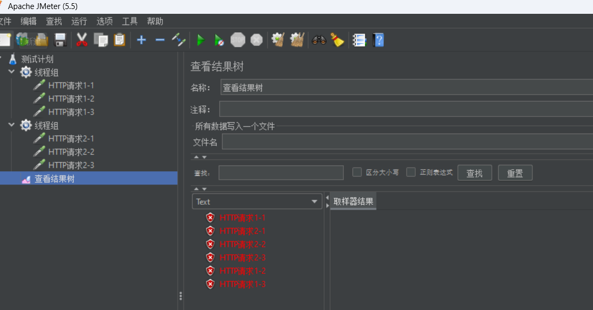
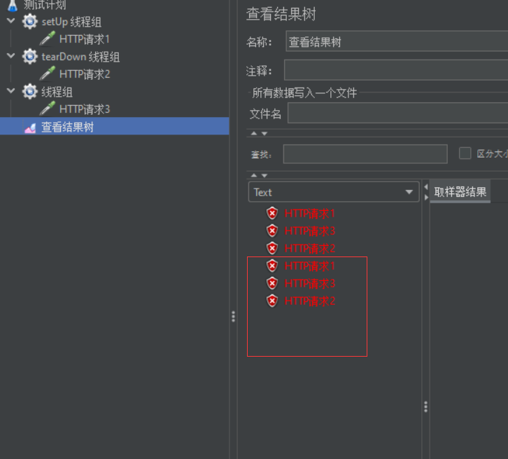
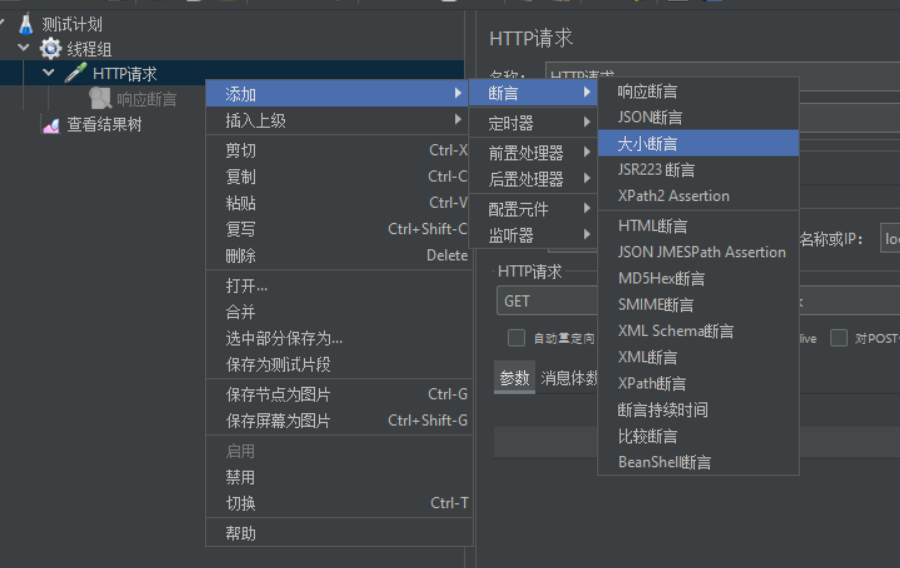
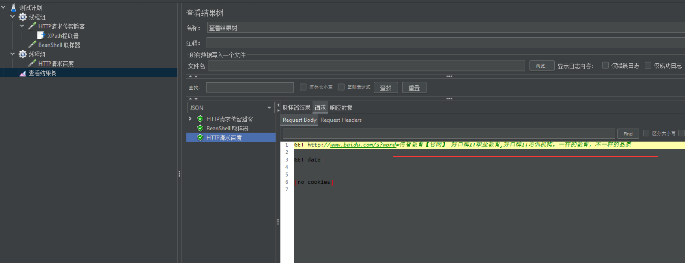

1.介绍与安装
1.1 介绍
- Jmeter是Apache组织使用Java开发的一款测试工具
- 1.可以用于对服务器、网络或对象模拟巨大的负载
- 2.通过创建带有断言的脚本文件来验证程序是否能返回期望的结果
- 优点：
- 1.开源、免费
- 2.跨平台
- 3.支持多协议
- 4.小巧
- 5.功能强大
- 缺点：
- 1.不支持IP欺骗
- 2.使用Jmeter无法验证JS程序，也无法验证页面UI，所以要和Selenium配合来完成Web2.0应用的测试
1.2 安装
下载完成后，直接解压
修改配置文件，界面中文化
即可使用
2.入门使用
1.测试计划–右键–线程–添加线程组
2.线程组–右键–取样器–http请求
3.线程组–右键–添加监听器–查看结果树
4.配置http请求信息
5.点击运行，查看结果
6.保存
3.具体构成
3.1 线程组
3.1.1 并发和顺序执行
并发执行：多个线程同时执行

顺序执行：多个线程顺序执行
3.1.2 两个特殊的线程组
setUp线程组：最优先执行的线程组
tearDown线程组：最后执行的线程组

3.1.3 线程组设置细节
3.2 Http请求
3.2.1 Http请求默认值
3.2.2 Http信息头管理器
3.3参数化
定义：动态的获取、设置或生成数据，是一种由程序驱动代替人工驱动的数据设计方案，提高脚本的编写效率以及编写的质量
以下四种方式实现参数化：
- 1.用户定义变量
- 2.CSV数据文件设置
- 3.用户参数
- 4.函数
3.3.1 用户定义变量
调用格式：${变量名}
3.3.2 CSV数据文件设置
- CSV：逗号分隔值，是一种简洁且常见的数据存储格式
- 实现步骤：
- 1.使用CSV文件存储测试数据
- 2.编写脚本（编码集使用UTF-8无BOM格式）
- 3.关联脚本与数据（将文件数据导入脚本）
3.3.3 用户参数
- 实现步骤：
- 编写被复用的脚本模板
- 使用用户参数存储测试数据
- 将数据导入脚本模板
- 设置执行次数
3.3.4 函数
- 常见的函数：
- _counter计数器函数：TRUE（每个用户都有自己的计数器）、FALSE（所有用户共用一个计数器）
- _Random随机数函数：参数1（取值范围最小值（包含））、参数2（取值范围最大值（包含））
- _time获取当前时间的函数：无参，获取的是距离
1970/01/01 00:00:00的毫秒数；参数1（yyyyMM_dd HH:mm:ss格式化成 年\月_日 时:分:秒 格式）
3.4 直连数据库
通过直连数据库让程序代替接口访问数据库，如果二者预期结果不一致，就找到了程序的缺陷
步骤：
Jmeter不具备直连数据库功能，必须整合第三方（jar包）实现
配置数据库的连接
通过JDBC Request请求向数据库发送SQL语句并接收提取响应结果
结果获取规则可以通过Debug Sampler组件查看
将提取的响应结果，在百度上
3.5 断言
- 断言：让程序代替人工判断响应结果是否符合预期
- 分类：
- 响应断言 = 断言状态码和响应体
- 大小断言 = 判断响应内容的字节长度
- 断言持续时间 = 判断响应时间
- 步骤：
- 按照之前的实现编写测试脚本
- 为被判断的取样器添加断言组件
- 直接运行查看结果，断言通过：无提示；断言失败：给出错误
3.5.1 响应断言
响应文本
通过
没通过
响应代码：即状态码
通过
没通过
或者
3.5.2 大小断言

3.5.3 断言持续时间
4.性能测试
4.1 逻辑控制器
4.1.1 if逻辑控制器
4.1.2 foreach逻辑控制器
4.1.3 循环逻辑控制器
4.2 关联操作
4.2.1 xpath提取器
需求：两个http请求，请求A访问传智播客官网，请求B访问百度，请求A将传智播客官网源码中的title标签的值去除，传递给请求B，在请求B中作为关键字搜索这个title值
步骤：
搭框架，编写两个请求，传智播客+百度搜索
核心：取出传智播客页面源码的title值
传递给百度：${变量名}的方式传值
4.2.2 正则表达式提取器
4.3 跨越线程组关联
- 变量作用域局限于当前线程组，其它线程组不可以直接调用
- 可以将请求A中提取的结果导出到公共空间（可以被不同线程组共享），请求B再从公共空间调用该变量，相当于全局变量
原来的操作，线程组之间无法访问其它线程组的局部变量
利用函数设置全局变量


4.4 高并发
Jmeter中内置了定时器，可以实现时间模式相关的性能测试
步骤：
1.搭框架，测试计划，线程组，取样器，结果树（局限性），指定线程组的线程数属性值
2.添加定时器
synchronizing timer（集合点组件）3.运行并查看结果：聚合报告组件可以对结果汇总分析
4.5 高频率
需求：一个用户以20QPS（==20次/s）的频率访问系统服务器，持续15秒，统计服务器的平均响应时间
QPS：
Query per Seconds每秒查询数（查询率），每秒访问多少次服务器步骤：
1.搭框架，测试计划，线程组，取样器，聚合报告，计算数据：循环次数 = 访问频率 * 持续时间
2.添加QPS访问频率控制的相关组件：每秒钟访问次数 = 访问频率 * 60
4.6 分布式管理
多台机器协作，以集群的方式完成测试任务，可以提高测试效率
角色划分：
- 控制机 = 负责任务分配
- 执行机 = 负责任务实现
工作流程：
- 1.控制机需要制定测试任务，并下发到执行机
- 执行机执行任务并将结果返回给控制机
- 控制机做结果汇总
环境搭建：
1.不同测试机上安装Jmeter
2.配置基础环境（统一操作系统、JDK、Jmeter …）
3.核心：控制机如何与执行机通信？关键点：端口号
4.控制机中设置执行机的IP
1
%JMETER_HOME%/bin/jmeter.properties ---> remote_hosts=执行机A的IP:端口号，执行机B的IP:端口号 ...
5.控制机和执行机都得设置远程访问相关属性
1
server.rmi.ssl.disable=true #设置允许远程访问